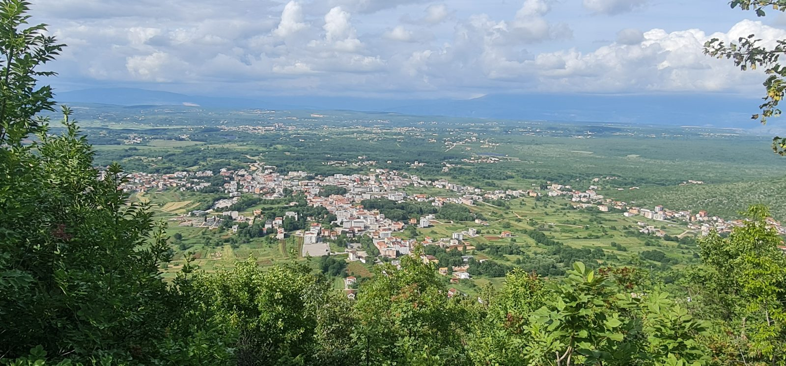

8.–15. Mai 2027Anmeldung offen

„Neue Wege auf alten Pfaden“ – Flugreise ab Stuttgart
- Direktflug Stuttgart – Mostar, Koffer inklusive
- 7 Nächte in der Villa Niko mit Frühstück, Halbpension wählbar
- Kleine Gruppe, höchstens 15 Pilger, persönlich begleitet
695 € pro Person im DoppelzimmerProgramm & Anmeldung